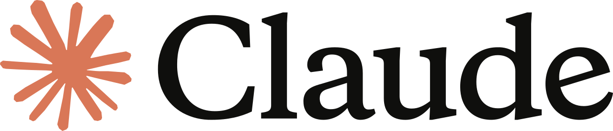
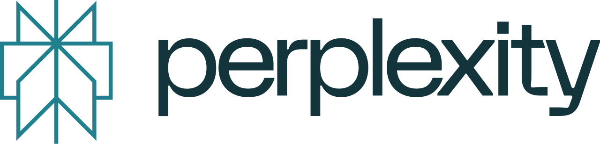
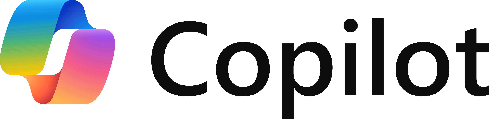
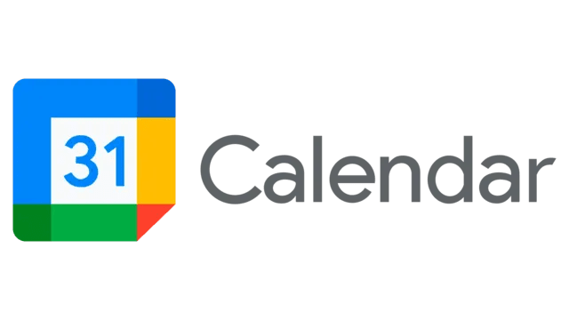
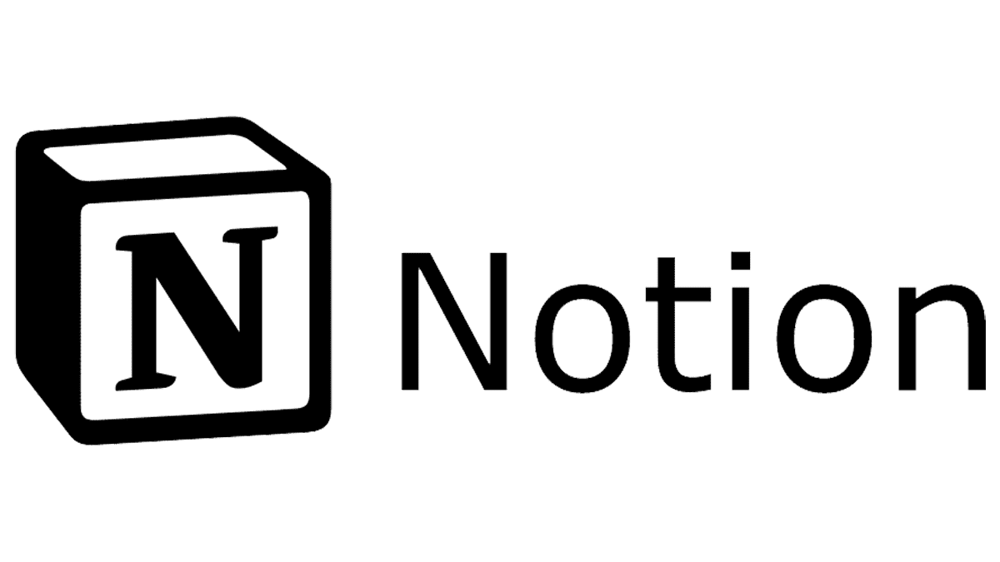
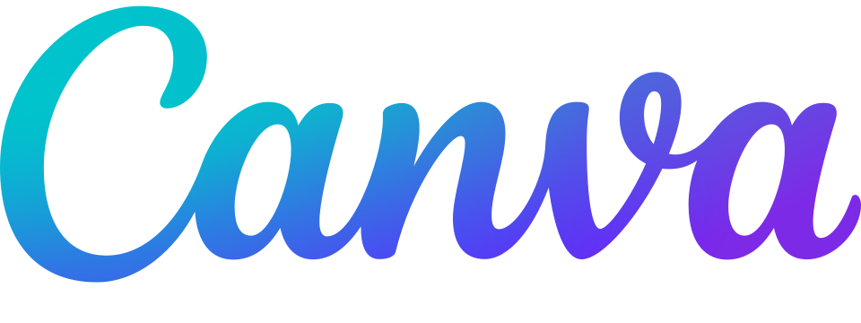

סיכום וכתיבה
ChatGPT
הכלי המוכר ביותר לסיעור מוחות, בניית ראשי פרקים לעבודות ותרגום חומרים מורכבים לשפה פשוטה.
לאתר ChatGPT ↗כלים חדשניים ופלטפורמות מתקדמות לייעול תהליכי הלמידה האקדמיים שלכם.
עוזרי מחקר וסיכום לסטודנט המודרני
כניסת הבינה המלאכותית לאקדמיה מציעה הזדמנות חסרת תקדים לייעול הלמידה. המטרה של כלים אלו אינה לספק פתרונות מהירים או לבצע את העבודה במקומכם, אלא לשמש כעוזרי מחקר המעודדים למידת עומק. שימוש מושכל ב-AI יעזור לכם לארגן מידע מורכב, לנתח מאמרים, ולפנות זמן לחשיבה ביקורתית ויצירתית.
הכלי המוכר ביותר לסיעור מוחות, בניית ראשי פרקים לעבודות ותרגום חומרים מורכבים לשפה פשוטה.
לאתר ChatGPT ↗ה-AI של גוגל, מצטיין בניתוח מידע עדכני מהרשת ובסנכרון מלא עם שאר כלי ה-Workspace שלכם.
לאתר Gemini ↗
ידוע ביכולת הניתוח המדויקת שלו לטקסטים ארוכים במיוחד. מושלם לעזרה וכתיבת קטעי קוד.
לאתר Claude ↗
מנוע חיפוש שמביא תשובות עם הפניות ישירות למקורות המידע. קריטי לאימות עובדות בכתיבה אקדמית.
לאתר Perplexity ↗הכלי המהפכני של גוגל המבוסס על "בינה מלאכותית מבוססת מקורות". העלו מאמרים וסיכומים וקבלו תשובות מדויקות עם ציטוטים ישירים מתוך הטקסט, ואף סרטונים ומצגות המנתחות את החומר עבורכם.
לאתר NotebookLM ↗
מודל השפה של חברת מייקרוסופט, למעשה משתמש בגרסאות פחות עדכניות של GPT. מוטמע במערכת ההפעלה של Windows ובתוכנות Microsoft365 השונות כמו: Word, Excel, PowerPoint וכו׳...
לאתר Gemini ↗שמירה על סדר בלוח הזמנים ובמטלות הסמסטר

לניהול מערכת השעות, קביעת תזכורות למבחנים וסנכרון פגישות עם חברי הצוות לפרויקטים.
לגוגל קלנדר ↗
מרכז אחד לסיכומי שיעור, מעקב אחר הגשות וריכוז כל מסמכי הקורס בצורה ויזואלית ומאורגנת.
לאתר Notion ↗סביבות לעיצוב מצגות, שרטוט מפות חשיבה ואפיון ממשקי למידה

מערכת לעיצוב אינטואיטיבי עם אלפי תבניות לכרזות אקדמיות, מצגות לפרויקטים, וסיכומים ויזואליים להגשות.
לאתר Canva ↗לוח מחיק וירטואלי אינסופי. מושלם למיפוי תהליכים, בניית מפות חשיבה ללמידה מורכבת ועבודה סינכרונית עם צוותים.
לאתר Miro ↗
כלי חובה לסטודנטים לעיצוב וטכנולוגיה. מאפשר שרטוט ואפיון מדויק של ממשקים, סביבות למידה, ואפליקציות בצורה מקצועית.
לאתר Figma ↗